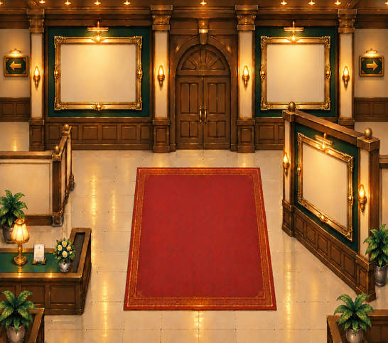

今回完成候補として確認する素材は「北扉の一組」です。
元の建築・額縁・絨毯は変更せず、正面の扉部分だけが切り替わります。正式キャラの描き直しは行っていません。
元の建築・額縁・絨毯は変更せず、正面の扉部分だけが切り替わります。正式キャラの描き直しは行っていません。

閉じた状態：元の一枚絵と画素単位で一致。
検証済み：①閉状態を原本と画素単位で照合、②扉以外の画素が不変、③透過PNGの実体、④写真3枚と公式館長・爺や原本との合成。
※ゲームへの組み込み・衝突判定連動は未実施です。また、北扉一組の完成候補であり、エントランス全体やLv.1〜6美術の完成を意味しません。